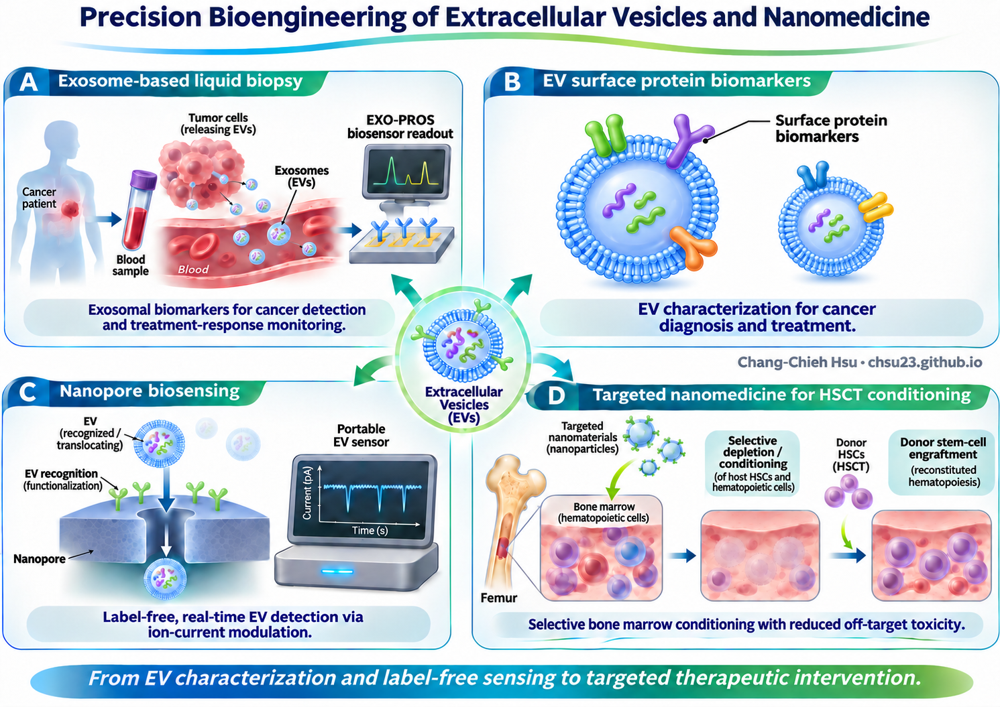

- Extracellular vesicles: Characterization and surface protein biomarkers for cancer diagnosis and treatment
- Biosensor development: Label-free electrical detection of extracellular using Nanopore and SPR biosnesor vesicles
- Targeted nanomedicine: X-ray–activated nanomaterials for cancer treatment/bone marrow conditioning

Research Projects
- Exo-PROS liquid biopsy biosensor
Designed the surface plasmon resonance sensing architecture, engineered the capture surface, and built the data analysis workflow. Benchmarked the assay against ELISA, qRT-PCR, and Western blot.
- Extracellular vesicle biomarkers for cancer diagnosis and treatment monitoring
Evaluated extracellular vesicle biomarkers in cohorts of patients with breast or lung cancer and investigated whether early changes in vesicle biomarkers could help predict response to immune checkpoint inhibitors.
- Extracellular vesicle characterization and surface protein biomarkers
Study extracellular vesicle surface proteins and their potential applications in cancer diagnosis and treatment.